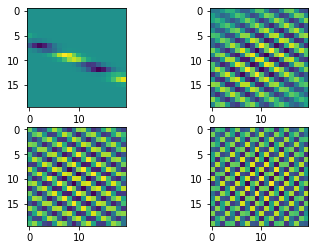

import numpy as np
import matplotlib.pyplot as plt
from einops import rearrange, repeat
import tensorflow as tf
from tensorflow.keras import layers
from tensorflow.keras.datasets import mnist
from flayers.layers import RandomGaborRandom Gabor experiment
In this quick experiment we will be training an MNIST classifier using
RandomGabor layers.
Library importing
Data loading
We will be using MNIST for a simple and quick test.
(X_train, Y_train), (X_test, Y_test) = mnist.load_data()
X_train = repeat(X_train, "b h w -> b h w c", c=1)/255.0
X_test = repeat(X_test, "b h w -> b h w c", c=1)/255.0
X_train.shape, Y_train.shape, X_test.shape, Y_test.shape((60000, 28, 28, 1), (60000,), (10000, 28, 28, 1), (10000,))Definition of simple model
model = tf.keras.Sequential([
RandomGabor(n_gabors=4, size=20, input_shape=(28,28,1)),
# layers.Conv2D(32, 3, input_shape=(28,28,1)),
layers.MaxPool2D(2),
layers.GlobalAveragePooling2D(),
layers.Dense(10, activation="softmax")
])
model.compile(optimizer="adam",
loss="sparse_categorical_crossentropy",
metrics=["accuracy"])
model.summary()2022-09-06 11:22:17.064899: I tensorflow/core/common_runtime/gpu/gpu_device.cc:1510] Created device /job:localhost/replica:0/task:0/device:GPU:0 with 2373 MB memory: -> device: 0, name: NVIDIA GeForce GTX 780 Ti, pci bus id: 0000:02:00.0, compute capability: 3.5
2022-09-06 11:22:17.065914: I tensorflow/core/common_runtime/gpu/gpu_device.cc:1510] Created device /job:localhost/replica:0/task:0/device:GPU:1 with 151 MB memory: -> device: 1, name: Tesla K40m, pci bus id: 0000:03:00.0, compute capability: 3.5
2022-09-06 11:22:17.067063: I tensorflow/core/common_runtime/gpu/gpu_device.cc:1510] Created device /job:localhost/replica:0/task:0/device:GPU:2 with 5435 MB memory: -> device: 2, name: NVIDIA GeForce GTX TITAN Black, pci bus id: 0000:83:00.0, compute capability: 3.5
2022-09-06 11:22:17.068686: I tensorflow/core/common_runtime/gpu/gpu_device.cc:1510] Created device /job:localhost/replica:0/task:0/device:GPU:3 with 5435 MB memory: -> device: 3, name: NVIDIA GeForce GTX TITAN Black, pci bus id: 0000:84:00.0, compute capability: 3.5Model: "sequential"
_________________________________________________________________
Layer (type) Output Shape Param #
=================================================================
random_gabor (RandomGabor) (None, 28, 28, 4) 26
_________________________________________________________________
max_pooling2d (MaxPooling2D) (None, 14, 14, 4) 0
_________________________________________________________________
flatten (Flatten) (None, 784) 0
_________________________________________________________________
dense (Dense) (None, 10) 7850
=================================================================
Total params: 7,876
Trainable params: 7,876
Non-trainable params: 0
_________________________________________________________________We can show the initial Gabor filters:
model.layers[0].show_filters()2022-09-06 11:22:19.809341: I tensorflow/compiler/mlir/mlir_graph_optimization_pass.cc:185] None of the MLIR Optimization Passes are enabled (registered 2)
2022-09-06 11:22:20.052736: I tensorflow/core/util/cuda_solvers.cc:180] Creating CudaSolver handles for stream 0x563ffaaf38c0
history = model.fit(X_train, Y_train, batch_size=128, epochs=5)Epoch 1/52022-09-06 11:22:26.673075: I tensorflow/stream_executor/cuda/cuda_dnn.cc:369] Loaded cuDNN version 8100
2022-09-06 11:22:27.122762: I tensorflow/core/platform/default/subprocess.cc:304] Start cannot spawn child process: No such file or directory469/469 [==============================] - 18s 28ms/step - loss: 1.2855 - accuracy: 0.7523
Epoch 2/5
469/469 [==============================] - 13s 28ms/step - loss: 0.2952 - accuracy: 0.9105
Epoch 3/5
469/469 [==============================] - 13s 28ms/step - loss: 0.2307 - accuracy: 0.9303
Epoch 4/5
469/469 [==============================] - 13s 28ms/step - loss: 0.1971 - accuracy: 0.9409
Epoch 5/5
469/469 [==============================] - 13s 28ms/step - loss: 0.1745 - accuracy: 0.9478We can visualize the gabor filters after the training process:
model.layers[0].show_filters()